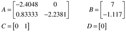

Compare step responses of the transfer function and state space models for the van de Vusse reactor.
Transfer function:
Perform the open-loop simulation for a step input change from 0 to 1 at t = 1, as shown in Figure M2-5.
State space:
Replace the transfer function block shown in Figure M2-5 with a state space block. Enter the following matrices in the MATLAB command window: 
Show that the resulting step responses of the transfer function and state space models are identical. |